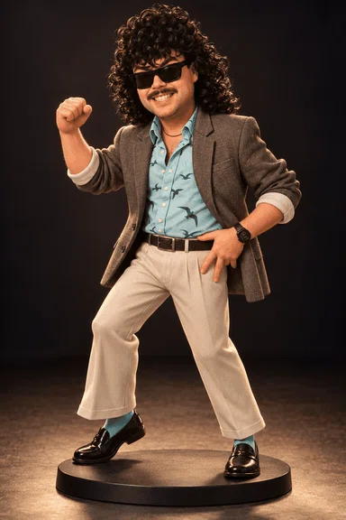
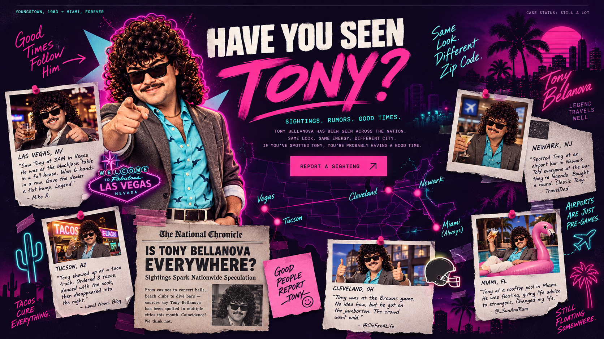

YOUNGSTOWN SENT HIM. MIAMI KEPT THE BOX.
TONY“No Receipts”BELLANOVA
Tony Bellanova is not a criminal mastermind.
Several people would like that distinction on record.
He left Ohio in 1983 with $83 and somebody else’s blazer.
Thirty-nine years later, he came back into circulation.
The blazer’s owner has been very patient.
SINCE ’83CHARISMA INTACT
TWO PAGES. HIS MOTHER HAS REQUESTED A CORRECTION.
THE BUS LEFT AT NINE. HIS FATHER ARRIVED AT SEVEN.
HE TOLD MOM
IT WAS
TEMPORARY.
In Youngstown, Tony had a steady job. He just kept forgetting to go to it.
At his uncle’s appliance store, he sold a display microwave twice. The second customer objected to the first customer carrying it out. Tony blamed inventory.
In June 1983, he packed $83, six bottles of hair product, and his cousin’s good blazer. His mother slipped in sandwiches. His father offered to drive him to the bus station. Immediately.
His father waited until the bus turned the corner before converting Tony’s bedroom into a room without Tony.
NOBODY
HIRED HIM.
THAT HELPED.
Tony discovered that a clipboard can get you almost anywhere.
He did not discover where to buy one.
By Friday he was outside a nightclub telling people they weren’t on the list. There was no list. The manager assumed he was the owner’s nephew. The owner assumed he was the manager’s problem.
He lasted eleven nights. The arrangement ended when he tried to charge the fire inspector a cover.
You can’t fire me.TONY, DURING A SURPRISINGLY BRIEF EXIT INTERVIEW
We never did the paperwork.
NOT MANAGEMENT’S MATERIAL.
OR BUST.PLEASE USE THE OTHER ENTRANCE.
SUMMER ’83 / THE GOLDEN WEEK
HIS REFERENCES
HAVE BLOCKED HIM.
Four departments.
One man HR has asked you not to let in.
39 YEARS.NO PAPERTRAIL.
In late ’83, Tony borrowed twenty dollars and said he’d be right back.
Then came four decades of forwarded mail, disconnected numbers, and a Christmas card signed “The Management.” His mother continued setting a place. His cousin continued asking about the blazer.
NEGOTIATING WITH WILDLIFE.TB-1987 // LAST PING
LOCATION: BISCAYNE BAY
Seen pitching an all-inclusive timeshare to a pelican. The pelican declined.
SOURCE: A SECOND, LESS RELIABLE PELICANTHE LANDSCAPER WAS JUST TRYING TO FINISH HIS SHIFT.
THEY WANTED
THE UNIT.
HE WAS
INCLUDED.
Miami, 2022. A storage auction.
Mostly patio furniture. One tenant.
A landscaping crew blew thirty-nine years of dust out of Unit 14. Behind a broken tanning bed, something coughed. Then it asked if they were with the building.
Tony stepped out, brushed off his blazer, and said, “I was just about to call you.”
Nobody had introduced themselves.
ORIGINAL 2D WIND TEST. PLEASE DIRECT COMPLAINTS DOWNWIND.
ENTIRELY TOO CONFIDENT.
“I wasn’t hiding.TONY BELLANOVA / THE CONVERSATION WAS ABOUT TWENTY DOLLARS
I was avoiding a conversation.”
RECORDED BEFORE THE PLATFORM WAS TAKEN AWAY.
THEY SAID
MAKE YOURSELF
USEFUL.
He heard “make yourself visible.”
This is the only surviving footage of Tony completing a task from beginning to end. Nobody asked him to do it, but there it is.

THE GLOVE COMPARTMENT HAD OTHER PRIORITIES.
DO NOT
TAPE OVER THESE.
Five original instrumentals from Tony’s permanent summer. Choose a cassette. The next track fades in before he can explain what the song means to him.
READY: MIDNIGHT VALET
FIVE ORIGINAL INSTRUMENTAL LOOPS / 2.4-SECOND FADE MIX / MUSIC ENABLED BY DEFAULT
THE PHOTOGRAPHER WAS PAID IN ADVANCE. ONCE.
HE ASKED
FOR ONE MORE.
Thirty-three poses.
The photographer now does real estate.
Two-Finger
Business Plan
He has never once pointed at a spreadsheet.

SELECT A POSE. HE HELD EVERY ONE UNTIL SOMEBODY ACKNOWLEDGED IT.
EVERY TOWN HAS ONE. THIS MAY BE THE SAME ONE.
HAVE YOU
SEEN TONY?
Some people leave a lasting impression. Tony leaves a number that rings a laundromat.
Phoenix says he sold a neighbour a carport that belonged to a different neighbour. Reno remembers a man who got into a wedding by asking which side needed more uncles.
In Seattle, he returned a fog machine because “you’ve already got it.” Atlanta still has a restaurant reservation for Bellanova, party of twelve. He came alone. He wanted options.

HE’S BACK.
CHECK YOUR TAB.
Same smile. Same blazer.
His cousin says the sleeves look stretched.